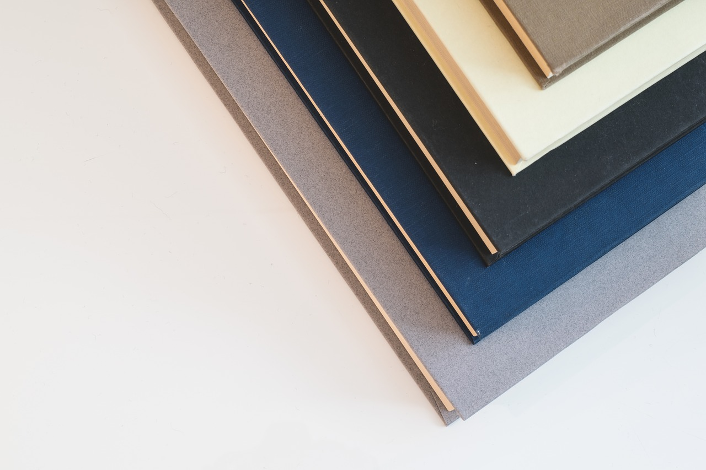
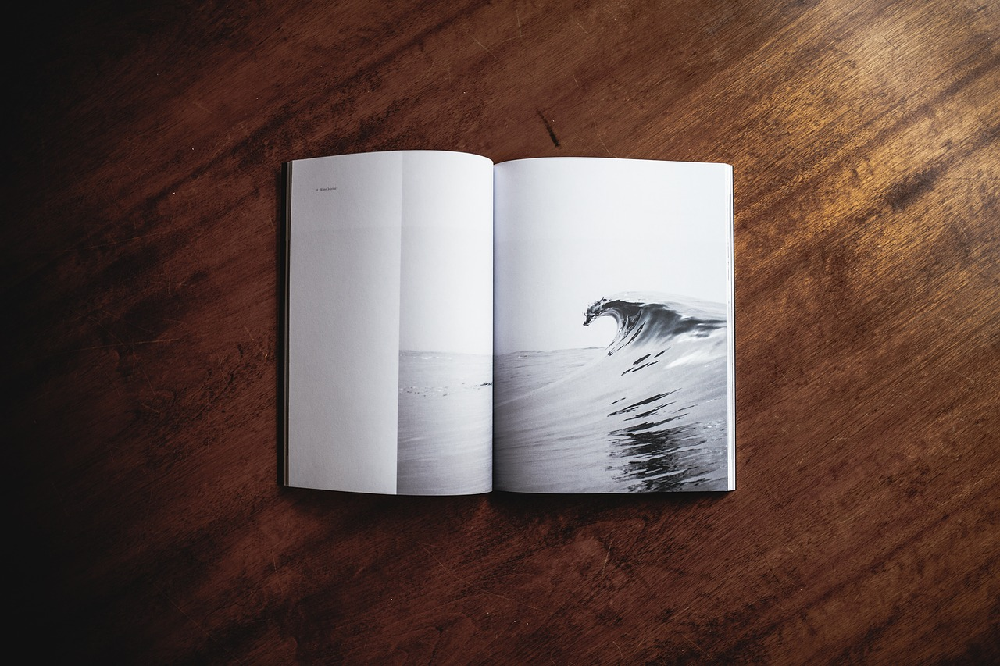

Clean & Minimalist
The simplest things are often the truest.
4:05 pm
A Minimalist Lesson in Opposites and Aesthetics
In visual arts, music, and other mediums, minimalism is a style that uses pared-down design elements.
Minimalism began in post–World War II Western art, most strongly with American visual arts in the 1960s and early 1970s. Prominent artists associated with minimalism include Donald Judd, John McCracken, Agnes Martin, Dan Flavin, Robert Morris, Anne Truitt, and Frank Stella. It derives from the reductive aspects of modernism and is often interpreted as a reaction against abstract expressionism and a bridge to postminimal art practices...
Read More2:15 pm
The Lone Tree of Winter
Marcescence is the retention of dead plant organs that normally are shed. It is most obvious in deciduous trees that retain leaves through the winter. Several trees normally have marcescent leaves such as oak (Quercus), beech (Fagus) and hornbeam (Carpinus), or marcescent stipules as in some but not all species of willows (Salix). Marcescent leaves of pin oak (Quercus palustris) complete development of their abscission layer in the spring. The base of the petiole remains alive over the winter. Many other trees may have marcescent leaves in seasons where an early freeze kills the leaves before the abscission layer develops or completes development. Diseases or pests can also kill leaves before they can develop an abscission layer...
Read More2:15 pm
Endless Waves and Infinite Shores
Much of Minimal Wave music was created in the late 1970s and early 1980s and subsequently appeared on bootleg and one-off compilations, the genre didn't have a name until a record label of the same name began releasing compilations and reissues in the mid-2000s.
Musicians in the genre were often influenced by avant-garde movements such as futurism and constructivism, and by the literature of science fiction and existentialism.
The genre's hallmarks include minimal musical structures, relatively unpolished production, and the use of analog synthesizers and drum machines manufactured...
Read More2:15 pm
Minimalist Living in the Richest Place in Africa
Africa is the world's second-largest and second-most-populous continent (the first being Asia). At about 30.3 million km2 (11.7 million square miles) including adjacent islands, it covers 6% of Earth's total surface area and 20.4% of its total land area. With 1.2 billion people as of 2016, it accounts for about 16% of the world's human population. The continent is surrounded by the Mediterranean Sea to the north, both the Suez Canal and the Red Sea along the Sinai Peninsula to the northeast, the Indian Ocean to the southeast and the Atlantic Ocean to the west. The continent includes Madagascar and various archipelagos. It contains 54 fully recognised sovereign states (countries), nine territories and two de facto independent states with limited...
Read More